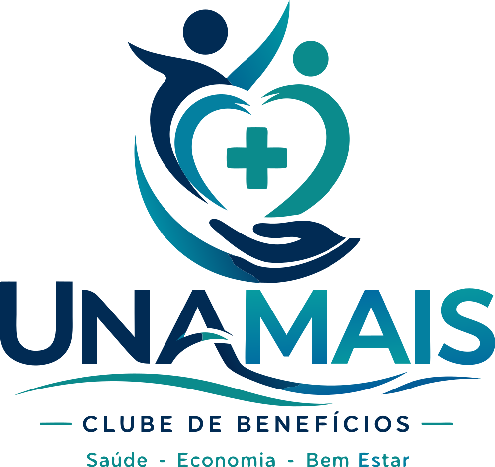
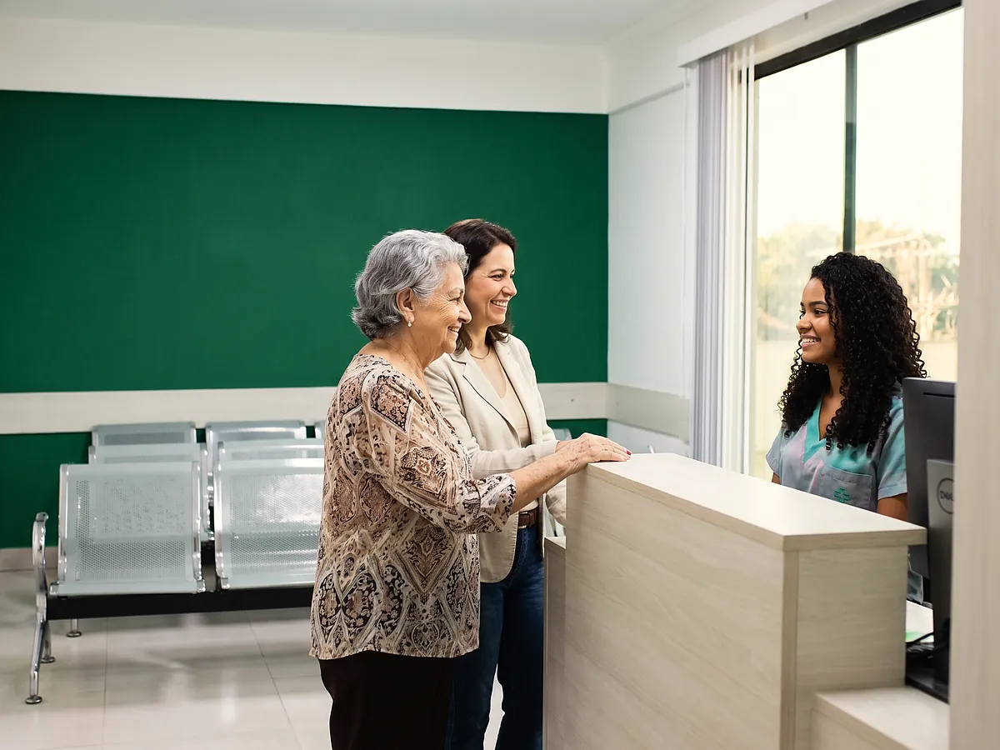

Básico
R$ 59,90por mês
- Telemedicina 24h com clínico geral, ilimitada
- Pronto atendimento online 24h
- 1 consulta com clínico geral por ano
- Até 30% de desconto em exames
- Até 20% de desconto em consultas com especialistas
- Clube de parcerias
Início · UnaMais

O UnaMais é o clube de benefícios em saúde da Unimedic. Com uma mensalidade a partir de R$ 59,90, o titular e até 3 dependentes têm desconto nas consultas e nos exames da clínica, telemedicina 24 horas e uma consulta com clínico geral por ano, já inclusa.


Vale na Unimedic, no UnaPark Shopping, e na rede de parceiros do clube.
De 20% a 40% nas consultas com especialista da Unimedic, conforme a opção escolhida.
De 30% a 50% nos exames de laboratório e de imagem da rede.
Consulta por vídeo com clínico geral a qualquer hora, sem sair de casa, e pronto atendimento online.
Uma consulta com clínico geral por ano para cada pessoa do clube, sem custo a mais.
Assistência pet, residencial e veicular 24 horas: chaveiro, encanador, eletricista e guincho.
Desconto em comércios e serviços parceiros no dia a dia.
As três opções valem para o titular e até 3 dependentes. Muda o tamanho do desconto e o que entra de serviço.
R$ 59,90por mês
R$ 69,90por mês
R$ 99,90por mês
Taxa de adesão: R$ 50,00, paga uma vez só. Valores e condições são definidos pelo UnaMais e confirmados no site do clube na hora de contratar.
O UnaMais é um clube de benefícios em saúde. Não é plano de saúde, plano odontológico nem seguro: não garante cobertura de despesas médicas, não oferece reembolso de procedimentos e não substitui um plano privado de assistência à saúde. A mensalidade dá direito aos descontos e serviços descritos, na Unimedic e na rede de parceiros, conforme as regras do clube. Serviços, valores e condições são definidos pelo UnaMais e podem mudar; confirme no site do clube antes de contratar.
O clube é separado da clínica: você contrata no site do UnaMais e usa os benefícios na Unimedic e nos parceiros. A recepção da clínica sabe explicar tudo.
Não. É um clube de benefícios em saúde: a mensalidade dá desconto nas consultas e nos exames da Unimedic, telemedicina 24 horas e uma consulta com clínico geral por ano. Não cobre internação, urgência nem procedimentos, e não substitui um plano de saúde.
Cada mensalidade vale para o titular e até três dependentes. As regras de quem pode ser incluído estão no site do clube, na hora da contratação.
Não há fidelidade: você cancela quando quiser, pelo próprio clube. Há uma taxa de adesão única de R$ 50,00 na entrada.
Na hora de marcar, avise que é do UnaMais. A recepção aplica o desconto da sua opção na consulta e nos exames.
O clube é pensado para quem não tem convênio ou para as especialidades que atendem só no particular. Se você tem convênio aceito pela clínica, a consulta vai pelo convênio.
A contratação é online, no site do clube. Se preferir, a equipe explica pelo WhatsApp.